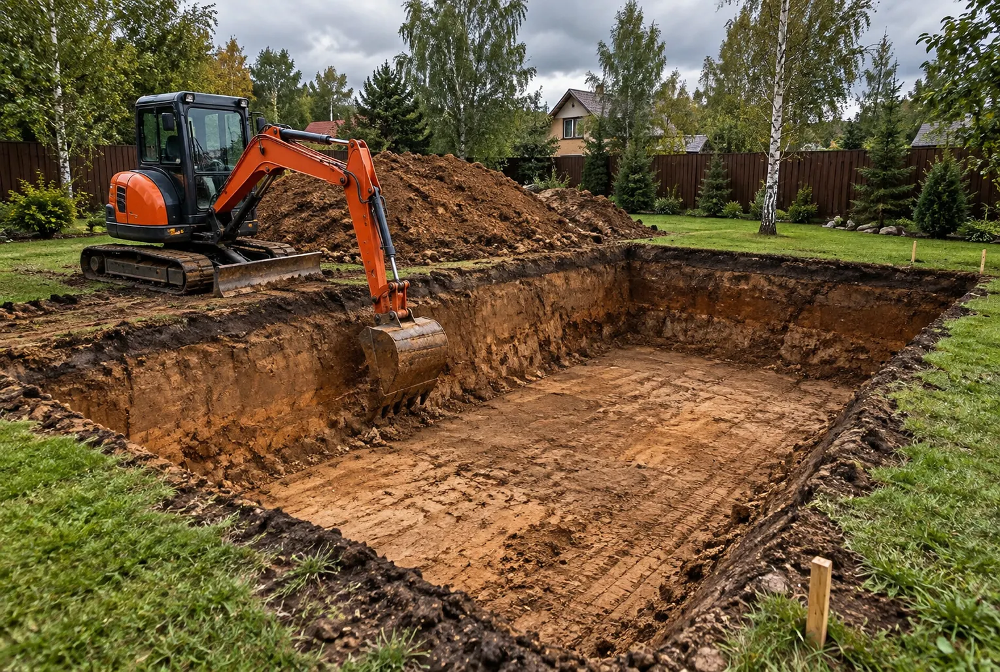
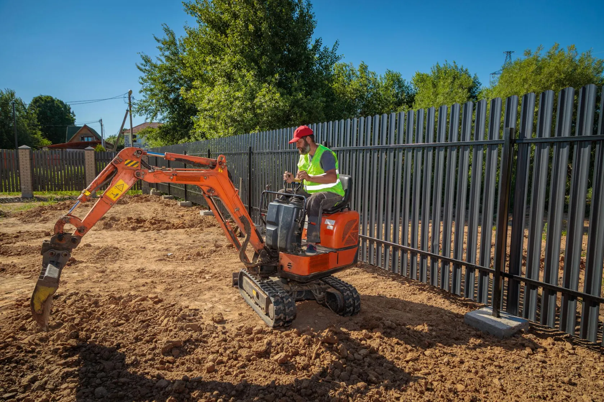
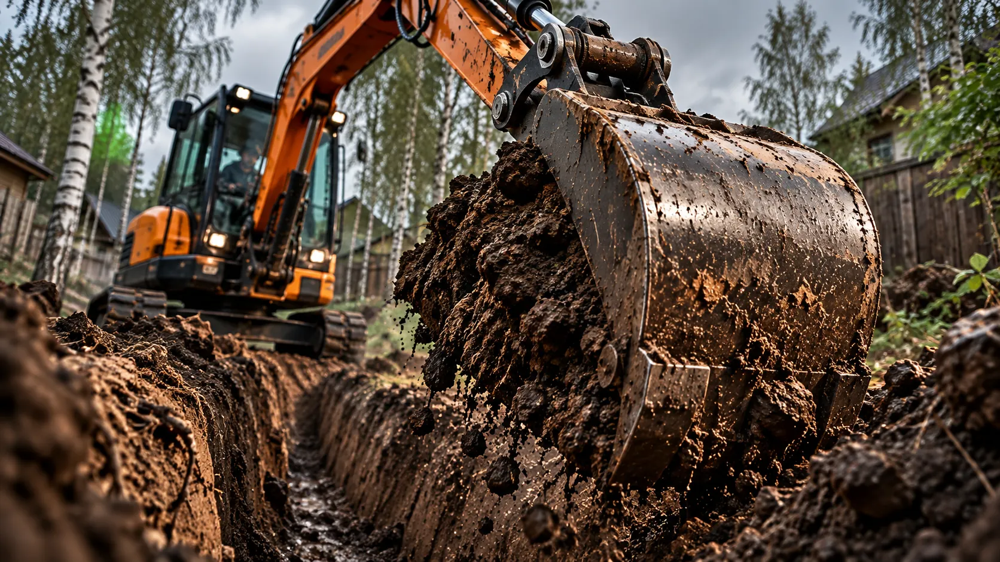

01 / КОММУНИКАЦИИ
01 / КОММУНИКАЦИИТРАНШЕЯ ОТ ВОРОТ К ДОМУ
Длинный маршрут под инженерную линию, требующий точной схемы трассы.
Примеры задач, которые удобно оценивать по фотографиям участка, схеме и размерам. Раздел подготовлен под будущее портфолио.

Это сценарии, не реальные отзывы и не подтверждённые выполненные проекты.
01 / КОММУНИКАЦИИДлинный маршрут под инженерную линию, требующий точной схемы трассы.

02 / УЗКИЙ УЧАСТОККлючевой вопрос — фактические габариты проезда и условия маневрирования.

03 / ВОДООТВЕДЕНИЕЗемляная часть системы с учётом проектных уклонов и мест сброса воды.
Габариты, глубина и устойчивость откосов уточняются до начала работ.
Чтобы превратить этот раздел в портфолио, добавьте реальные фото до/после, район, состав и дату выполненных работ — только после согласования с заказчиком.
Место, примерные размеры и несколько фотографий участка помогут понять объём работ и условия подъезда. Стоимость обсуждаем после уточнения деталей.